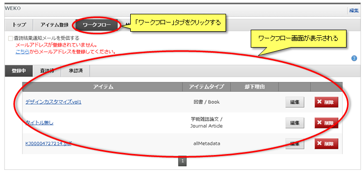
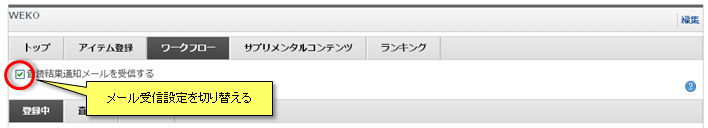
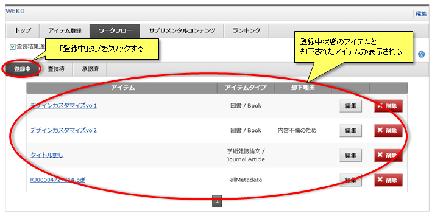
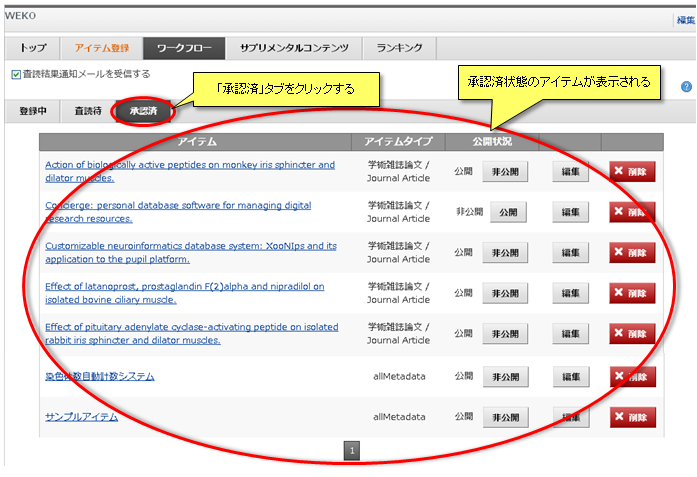
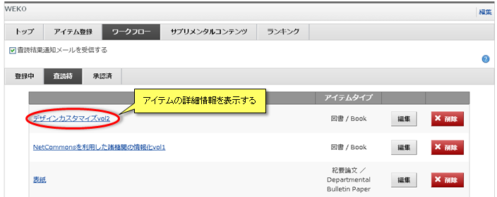
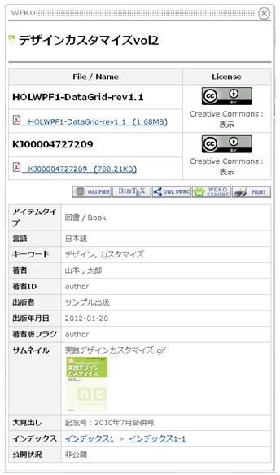
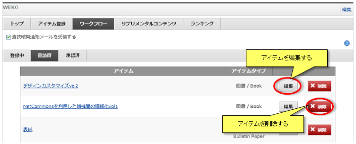

ワークフロー
「ワークフロー」タブをクリックするとワークフロー画面が表示されます。
自身が登録したアイテムを閲覧することができます。

自身が登録したアイテムを閲覧することができます。
査読通知メール受信設定
アイテムの査読通知メールの受信設定を変更することができます。
「サプリメンタルコンテンツ査読結果通知メールを受信する」にチェックを入れると、自身が登録および編集をしたアイテムの査読結果がメールで通知されます。

【注意事項】
「サプリメンタルコンテンツ査読結果通知メールを受信する」にチェックを入れると、自身が登録および編集をしたアイテムの査読結果がメールで通知されます。
【注意事項】
- 査読通知メールは会員情報設定画面でメールアドレスを設定している場合のみ有効となります。
登録アイテム閲覧
自身が登録したアイテムが状態別に表示されます。
登録中
「登録中」タブをクリックすると、自身が登録したアイテムのうち、登録/編集中に中断したアイテムおよび査読で却下されたアイテムが表示されます。
却下されたアイテムである場合は却下理由が表示されます。

表示アイテムの詳細閲覧方法などの操作については共通操作をご覧ください。
却下されたアイテムである場合は却下理由が表示されます。
表示アイテムの詳細閲覧方法などの操作については共通操作をご覧ください。
査読待
承認済
「承認済」タブをクリックすると、自身が登録したアイテムのうち、管理者の承認済のアイテムが表示されます。

「公開」ボタンおよび「非公開」ボタンでアイテムの公開状態を切りかえることができます。
アイテムの状態が"公開"である場合は「非公開」ボタンをクリックすると"非公開"になります。
アイテムの状態が"非公開"である場合は「公開」ボタンをクリックすると"公開"になります。
表示アイテムの詳細閲覧方法などの操作については共通操作をご覧ください。
「公開」ボタンおよび「非公開」ボタンでアイテムの公開状態を切りかえることができます。
アイテムの状態が"公開"である場合は「非公開」ボタンをクリックすると"非公開"になります。
アイテムの状態が"非公開"である場合は「公開」ボタンをクリックすると"公開"になります。
表示アイテムの詳細閲覧方法などの操作については共通操作をご覧ください。
共通操作
■アイテム詳細情報の閲覧
アイテムのタイトルをクリックするとそのアイテムの詳細情報がポップアップで表示されます。


■アイテムの編集／削除
「編集」ボタンをクリックすると、アイテムのメタデータの編集を行うことができます。
アイテムの編集についてはアイテム登録をご覧ください。
「削除」ボタンをクリックすると、確認用のポップアップが表示されます。
「OK」ボタンをクリックするとアイテムを削除することができます。

■ページ移動アイテムの編集についてはアイテム登録をご覧ください。
「削除」ボタンをクリックすると、確認用のポップアップが表示されます。
「OK」ボタンをクリックするとアイテムを削除することができます。
アイテムは1ページに20件ずつ表示されます。
をクリックするとアイテムリストの次ページが表示されます。
をクリックするとアイテムリストの前ページが表示されます。
ページ番号をクリックすると指定したページが表示されます。
をクリックするとアイテムリストの次ページが表示されます。
をクリックするとアイテムリストの前ページが表示されます。
ページ番号をクリックすると指定したページが表示されます。